Bölüm 01
Dosya
Burada küçük bir parantez açmak gerekir: Bu metinlerin içinde beni en çok etkileyen karakterlerden biri, hatta belki de en başta geleni Ömer Naci oldu. Evet, bu tamamen objektif bir cümle değil; ama bazen tarih okurken insanın yakasına yapışan karakterler olur. Sıfırdan gelen, gerçek anne babası bile tam bilinmeyen, yetim büyüyen, düzenli bir kariyer basamağına tutunamayan birinin; Harbiye’de arkadaşlarının zihnini açması, Selanik’te gizli cemiyetin 7 numarası olması, İran’da idamdan dönmesi, Babıali önünde kalabalığı tek başına tutması ve sonunda yine sefer yolunda ölmesi tuhaf biçimde insanı çarpıyor. İttihatçılar içinde parası, makamı ve konforu en az önemseyenlerden biri olması da onu ayrıca ilginç kılıyor.
Bölüm 02
Yetimlikten Dile: Bursa, Bağdat, Musul
Ömer Naci 1878’de doğdu. Nüfusa İstanbul Beylerbeyi’nde kaydedildi; fakat çocukluğunun ilk büyük gerçeği kayıptı. Gerçek anne ve babasının kim olduğu kesin biçimde bilinmez. Küçük yaşta yetim ve öksüz kaldıktan sonra Defterdar Cemal Bey ile Fatma Hayriye Hanım tarafından evlat edinildi. Cemal Bey’in memuriyetleri sebebiyle Trabzon, Adana, Bağdat, Basra, Musul ve İstanbul gibi farklı şehirlerin havasını soludu. Bu sürekli yer değiştirme, başka bir çocukta dağınıklık doğurabilirdi; Ömer Naci’de ise dil, gözlem ve sahne sezgisi doğurdu.
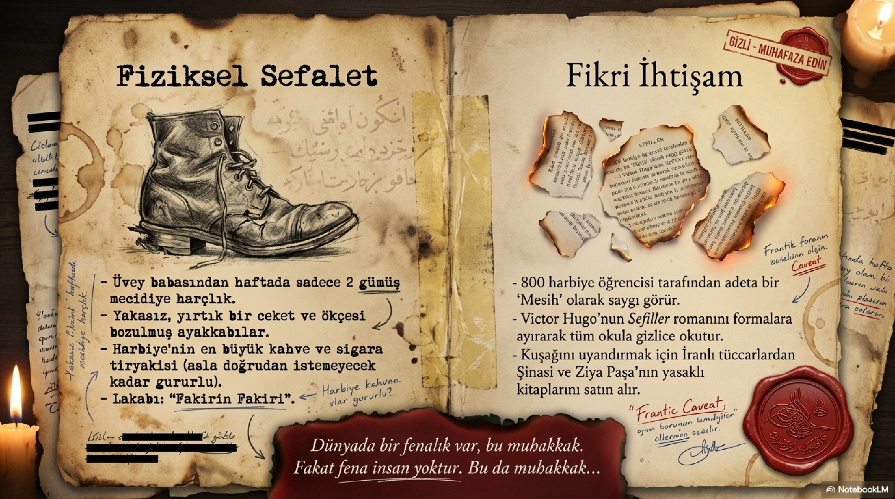
Bağdat yılları onun zihninde ayrı bir yer tutar. Arapça, Farsça ve Fransızcayla erken yaşta tanıştı. Bu diller ileride yalnızca kültürel bir süs olmayacaktı; İran’da, Kafkasya’da, Anadolu’nun doğusunda, farklı topluluklara seslenirken onun en büyük silahlarından biri haline gelecekti. İttihatçıların çoğu iyi subay, iyi doktor, iyi bürokrat veya iyi teşkilatçıydı. Ömer Naci ise başka bir şeydi: sözün coğrafya değiştirebileceğini bilen bir adamdı.
Bursa Askerî İdadisi onun ilk büyük patlamalarından birine sahne oldu. Okulun bakkalındaki yolsuzluğa sessiz kalmadı. Şikayetleri dikkate alınmayınca üzüm dolu küfeyi devirip çiğnedi. Sonra hapsedildi, okuldan kaçtı, Arapça bilgisi sayesinde bir köyde birkaç hafta imamlık yaptı, yakalanınca yeniden hapsedildi. Bu hikaye küçük bir okul disiplini meselesi gibi okunmamalı. Ömer Naci daha genç yaşta haksızlık gördüğü yerde duramayan, abartılı tepkiler veren, sahneyi büyüten bir karakterdi. Ölçülü değildi; ama tarih bazen tam da ölçüsüz insanların gürültüsünden yön bulur.
Bölüm 03
Manastır: Mustafa Kemal’e Edebiyat Kapısını Açan Adam
Bursa’daki hadiselerden sonra Manastır Askerî İdadisi’ne gönderildi. Bu bir bakıma okul değişikliği değil, sürgün tadında bir yön değiştirmeydi. Ama Manastır, Ömer Naci için müthiş bir sahne oldu. Burada Mustafa Kemal’le yakın dostluk kurdu. Mustafa Kemal o yıllarda edebiyatla çok içli dışlı değildi. Ömer Naci ondan kitap istedi, gösterilen kitapları beğenmedi, bu tavır Mustafa Kemal’in gururuna dokundu. Sonuç? Mustafa Kemal şiir ve edebiyat diye bir dünyanın varlığını fark etti. Hatta hocaları müdahale etmese belki askerlik yerine şiire daha fazla kayacaktı.
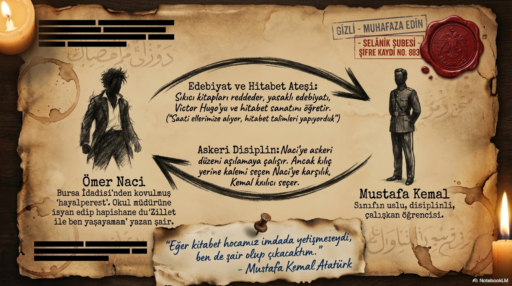
Bu ayrıntı çok kıymetlidir. Çünkü Ömer Naci’nin etkisi sadece meydanlarda bağırmasıyla sınırlı değildir. O, arkadaşlarının zihnine de dokunuyordu. Mustafa Kemal ile ders aralarında hitabet talimleri yapıyor, süre tutarak konuşma denemeleri düzenliyorlardı. Bir tarafta ileride Cumhuriyet’i kuracak kurmay akıl, diğer tarafta İttihat ve Terakki’nin en güçlü hatibi. Aynı sırada, aynı iklimde, aynı vatan derdiyle yetişiyorlar. Tarihin sevdiğim tarafı biraz da bu: bazen büyük dönüşümler, iki gencin “sen konuş, şimdi ben konuşayım” diye yaptığı talimle başlıyor.
Bölüm 04
Harbiye’nin Diyojen’i
Harbiye’ye 1899’da başladı. Dersleri çok parlak değildi; kurmay sınıfına kalamadı. Fakat okulun ruhunda bıraktığı iz, birçok başarılı öğrenciden daha büyüktü. Üstüne başına pek dikkat etmez, parasız yaşar, kahve ve sigara etrafında dönen garip bir teneffüshane hayatı sürerdi. Arkadaşları onu hem sever hem de sayardı. Hatta kendisini tanıtanların “Ömer Naci’nin sınıf arkadaşıyım” demesi bile okul içinde bir referans haline gelmişti. Burada tuhaf bir şey var: Adamın cebinde para yok, kıyafeti dağınık, ders başarısı sınırlı; ama sınıfın manevi merkezi gibi duruyor. Bu herkese nasip olan bir etki değildir.
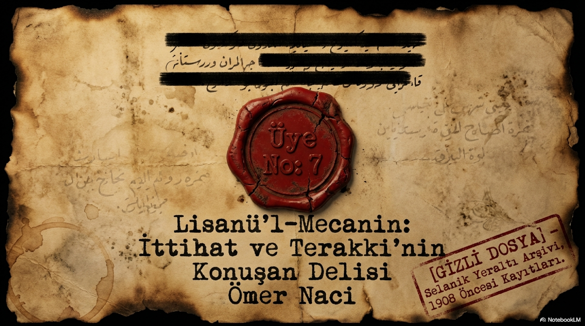
Harbiye’de asıl yaptığı iş yasak yayınları dolaşıma sokmaktı. Namık Kemal, Abdülhak Hamid, Ziya Paşa, Şinasi ve benzeri isimlerin eserlerini buluyor, arkadaşlarına okutuyor, hatta Victor Hugo’nun Sefiller’ini parçalara ayırarak okul içinde dolaştırıyordu. Bu, bugünün gözüyle kitap paylaşımı gibi masum görünebilir. Abdülhamid devrinin Harbiye’sinde ise her sayfa siyasi bir mayındı. Ömer Naci o mayınları çantasında, cebinde, bazen de dilinin ucunda taşıdı. İttihatçılığın propaganda damarını anlamak istiyorsak, bu sahneyi kaçırmamalıyız: daha örgüt tam büyümeden, önce yasak metinler genç subayların zihnine giriyordu.
Bölüm 05
Selanik: 7 Numaralı Üye ve Yemin Sahnesi
1902’de teğmen olarak mezun oldu. İlk görevleri onu Rumeli’ye taşıdı. 1904’ten itibaren jandarma tensikatı çevresinde görev aldı; Arapça, Farsça ve Fransızca bilmesi onu çok uluslu bir çalışma ortamında kullanışlı hale getiriyordu. Selanik’e geldiğinde hürriyetçi fikirlerin artık kitap sayfasından çıkıp örgüt odasına girdiği günler başlamıştı. Ömer Naci hem Mustafa Kemal’in Vatan ve Hürriyet çevresiyle hem de Talat’ın liderliğinde gelişen Osmanlı Hürriyet Cemiyeti ile ilişki kurdu.
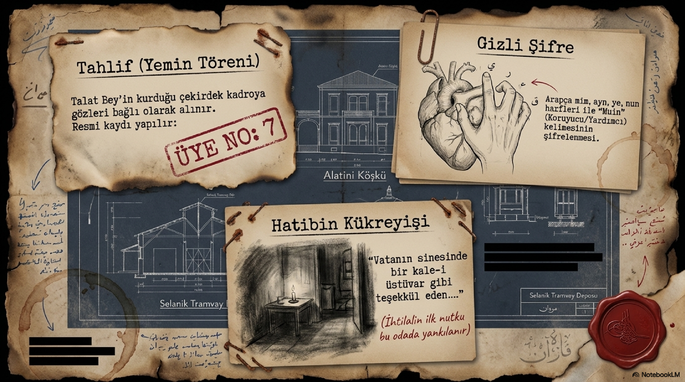
18 Eylül 1906’da Ömer Naci adına kiralanan küçük evde yapılan toplantı, Osmanlı Hürriyet Cemiyeti’nin kader anlarından biridir. Önce Hilal adı düşünülen yapı, bu toplantıda Osmanlı Hürriyet Cemiyeti adını aldı. Yaş sırasına göre üye numaraları verildi ve Ömer Naci 7 numaralı üye oldu. Bu toplantının atmosferini düşünelim: az kişi, çok korku, büyük iddia, gizli yemin, silah, metin, tahlif. Ömer Naci burada sadece katılımcı değildi; yemin töreninin duygusunu, sözünü ve ritüel kuvvetini büyüten adamdı. İttihatçılık biraz da böyle kuruldu: fikir kadar sahne, program kadar yemin, akıl kadar heyecan.
Onun kendi kuşağını anlatırken kullandığı mecazlar bile karakterini gösterir. İttihatçıları bir çeşit “mecnunlar heyeti” gibi tasavvur eder; Talat aklın, Hüseyin Cahit kalemin, Enver kılıcın, Yakup Cemil deliliğin, kendisi ise lisanın temsilcisidir. Bu yalnızca komik bir benzetme değil. Ömer Naci kendi rolünü çok iyi biliyordu. Kılıcı Enver kadar kullanamayabilir, teşkilatı Talat kadar yönetemeyebilir, merkezî planı Bahaeddin Şakir kadar kuramayabilir; ama kalabalığı ayağa kaldıracak cümleyi o bulur.
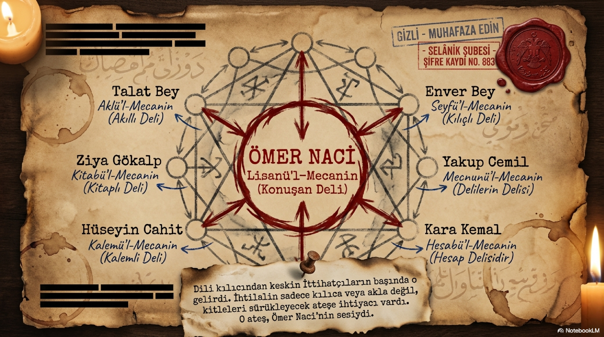
Bölüm 06
Paris’ten İran’a: Gizli Rota ve Bitmeyen Sefer
1907’de Selanik’te işler daralmaya başladı. Çocuk Bahçesi dergisindeki edebî tartışmalar siyasi bir mahiyet kazandı, tutuklanma söylentileri yayıldı, örgüt içi kırgınlıklar arttı. 8 Nisan 1907’de Hüsrev Sami ile birlikte Selanik’ten kalkan bir gemiyle Paris’e firar etti. Üniformasıyla vapura binmesi başlı başına cesur bir hamleydi. Selanik Merkez Komutanlığı firarı ancak sonra anlayabildi. 18 Temmuz 1907’de askerlikten atıldı. Paris’e ulaştığında adı Şura-yı Ümmet’te duyuruldu; fakat Paris’in masa başı havası ona dar geldi. Ömer Naci için dava, oturup bekleyerek değil, sahaya inerek yaşanırdı.
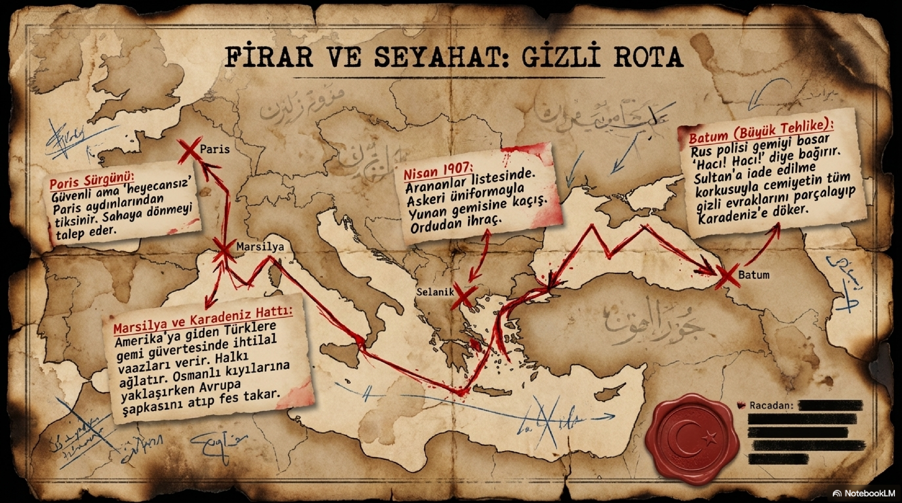
İran’da meşrutiyet mücadelesi alevlenmişti. Erzurum ve doğu vilayetlerinde de kaynaşma vardı. Ömer Naci, Arapça ve Farsçasının sağlayacağı avantajla doğuda teşkilat kurabileceğini düşündü. Marsilya’da vapurun gecikeceğini öğrenince üç günü bile boşa harcamadı; Amerika’ya gidip dönen Türk yolcuları topladı, onlara Cemiyetin maksadını anlattı, memlekete vardıklarında propaganda yapmalarını istedi. İstanbul limanında hafiyeler şüphelendi, yolcular sorgulandı, fakat kimse onun kimliğini açık etmedi. Daha yolun başında küçük bir propaganda ağı kurmuştu. İşte Ömer Naci farkı: geciken vapuru bile teşkilat fırsatına çevirir.
Batum, Selmas, Tebriz, Van ve Bitlis hattında çalıştı. Yeri geldi özel evrakları yırtıp denize attı; yeri geldi parasız kaldı, üstündeki elbise parçalandı, emanet bir İran abasına muhtaç oldu. Tifo hastalığına yakalandı, haftalarca yataktan kalkamadı. Birkaç kez hapse atıldı, idama mahkum edildi, dostları tarafından kurtarıldı. İran’da yalnızca İttihatçı propaganda yapmadı; yerel meşrutiyetçi çevrelerle temas kurdu, okul ve mecmua işleriyle ilgilendi, Azerbaycan şivesiyle nutuklar verdi. Ömer Naci’nin hayatında söz ile sefer birbirinden ayrılmaz. Konuşur, yürür, kaçar, yakalanır, yine konuşur.
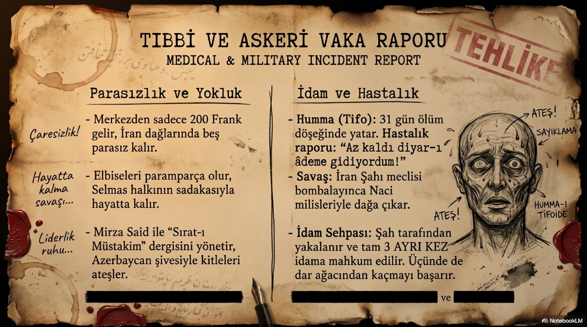
Bölüm 07
Meşrutiyet Haberi ve Vatan Toprağını Öpen Adam
23 Temmuz 1908’de Meşrutiyet yeniden ilan edildiğinde Ömer Naci İran’daydı. Herkes onun nerede olduğunu merak ediyor, hatta hayatından endişe ediyordu. Eylül 1908’de Van’a ulaştığı haberi geldiğinde İttihatçı çevrelerin içi rahatladı. Sınırı geçip Osmanlı toprağına ayak bastığında eğilip vatan toprağını öptü. Bu hareketi sahne diye küçümsememek gerekir. Ömer Naci’nin dünyasında duygu siyasetin parçasıydı. O, vatanı soyut bir kavram gibi değil, öpülecek toprak gibi yaşardı.
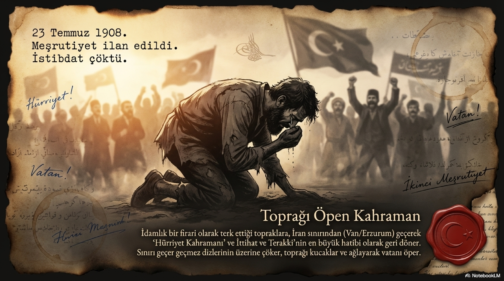
Muş’ta bando ve mızıka ile karşılandı. Üzerinde silah ve bomba bulunan arkadaşlarıyla halkın karşısına çıktı, uzun bir nutuk attı. Onu dinleyenler bazen bir hatip değil, kendinden geçmiş bir derviş görüyordu. Söze başlarken hasta gibi soluk, konuştukça kızaran, canlanan, saçları diken diken olan, kalabalığı kendi ritmine çeken bir adam. Muş’ta camide Müslümanlara, kilisede Hristiyanlara, mezarlıklarda farklı topluluklara seslendi. Cemiyetin mesajını halka indirmekte eşsizdi. İttihat ve Terakki elit bir subay-aydın hareketi olarak kalacaksa Ömer Naci’ye ihtiyaç yoktu; halka inecekse ona mecburdu.
Erzurum’da verdiği konferanslar büyük ilgi gördü. Pastırmacı Kıraathanesi dolup taştı. Namık Kemal’in Vaveylâ’sını okuduğunda salonun ağladığı anlatılır. Daha önemlisi, burada da yemin merasimleri sürdü. Kur’an, silah ve kılıç üzerine yapılan tahlif, İttihatçılığın meşruiyet kazandıktan sonra bile yeraltı refleksini bırakmakta zorlandığını gösterir. Ömer Naci bu ritüellerin başındaki isimlerden biriydi. Çünkü o, siyasetin yalnızca programla değil, sembolle ve duyguyla yaşadığını biliyordu.
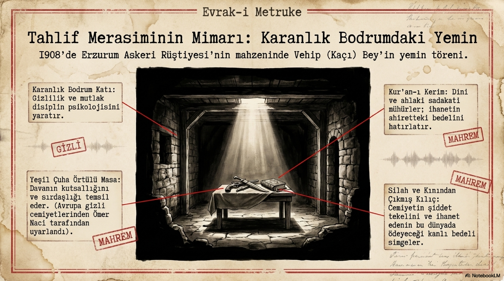
Bölüm 08
Makamı Reddeden İdealist
1908 sonrası İstanbul’a döndüğünde ona askerî makamlar teklif edildi. Reddetti. Şura-yı Ümmet’in eski yazıcısı olmayı mevki ve rütbeye tercih etti. Çünkü ona göre hürriyet ilan edilmiş olsa bile dünya hâlâ zalimlerle doluydu, Abdülhamid hâlâ tahtta oturuyordu, insanlar hâlâ eski sefaletin izlerini taşıyordu. Bu yüzden rahat bir koltuğa oturmak içini ferahlatmadı. Aralık 1908’de Settar Han’a yardım etmek için yeniden İran’a gitti. Bu tavır, onun karakterinin en net özetidir: makam değil hareket, maaş değil dava, konfor değil sefer.
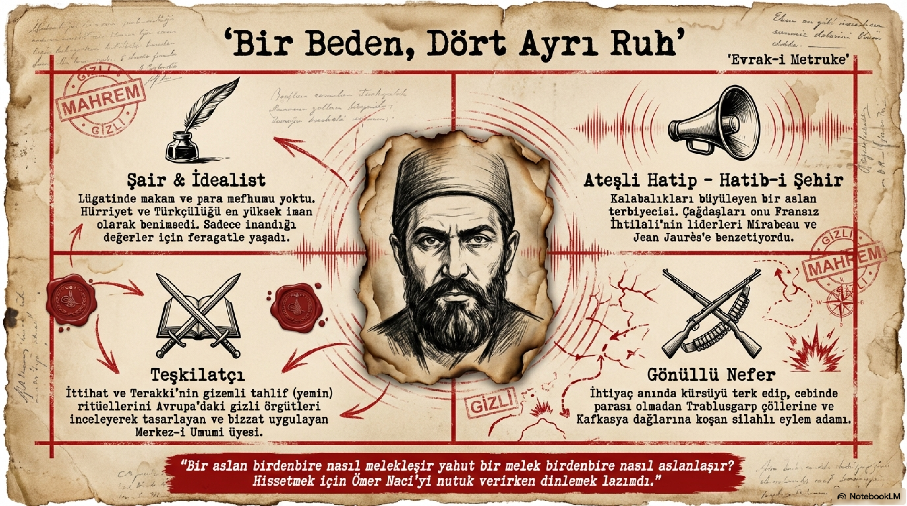
Onu tanıyanların dervişe, seyyaha, hatta peygamber ruhlu bir ideale benzetmesi boşuna değildir. Bu benzetmeler bugün abartılı gelebilir ama dönemin insanları Ömer Naci’de sıradan bir siyasi figür görmüyordu. Para ile ilişkisi zayıftı, düzenli kariyer fikri neredeyse yoktu, ailesini bile çoğu zaman mücadelenin gerisinde bırakacak kadar kendini davaya kaptırmıştı. Bu yanıyla büyüleyici olduğu kadar trajiktir de. Ömer Naci’nin güzelliği de buradadır: adam ışık saçarken kendi hayatını yakar.
Bölüm 09
Trablusgarp: Propaganda Cepheye İndiğinde
1911’de Trablusgarp Harbi başladığında Ömer Naci yeniden sahadaydı. Mustafa Kemal’le birlikte cepheye gitmek için yola çıkan isimler arasındaydı. Orada yalnızca nutuk atan bir moral memuru gibi davranmadı. Jandarma tensikatı tecrübesinden yararlanarak gönüllülerden bir jandarma düzeni kurdu, Defne’ye ulaştığında cephe organizasyonuna katkı verdi, ordunun defterdarlığı gibi işler üstlendi. Gazetelere gönderdiği yazılarda İtalyanların gerçek bir zafer kazanamayacağını vurguluyor, içerideki kamuoyunun direncini diri tutuyordu.
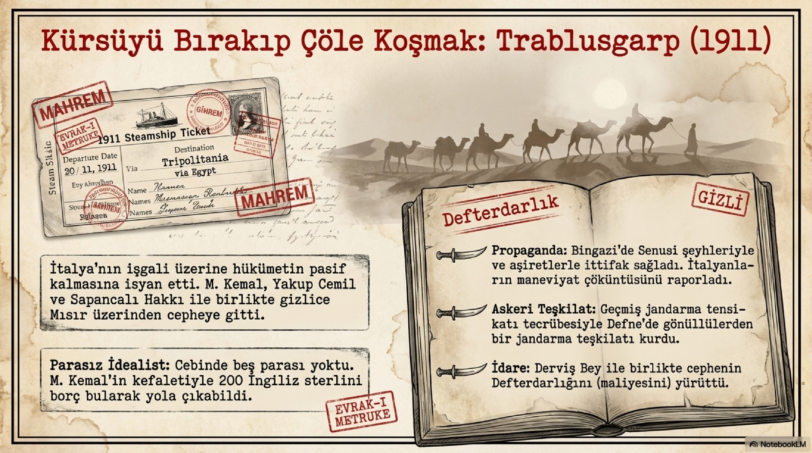
Bu nokta önemli: Ömer Naci’nin sözü havada kalan bir nutuk değildi. Söz, savaşın moral cephesiydi. Trablusgarp’ta halkı, gönüllüleri, Senusi çevrelerini, Osmanlı kamuoyunu aynı duygu hattında tutmak gerekiyordu. Bir cephede kurşun sıkılırken diğer cephede haber, efsane, umut ve inanç üretilir. Ömer Naci bu ikinci cephenin ustasıydı. İttihat ve Terakki onun üzerinden direnişi yalnızca askerî bir hadise değil, milletin onur meselesi olarak anlatabildi.
Bölüm 10
Meclis, Halaskar Zabitan ve Sultanahmet
1912’de Kırkkilise mebusu seçildi. Meclis hayatı uzun sürmedi ama kısa süre içinde kendini gösterdi. Halaskar Zabitan’ın Meclis’e gönderdiği tehdit bildirisi okunduğunda Ömer Naci kürsüye çıktı ve Osmanlı subaylarının imzasız tehdit mektuplarıyla meclisi sindirecek kadar alçalmayacağını söyledi. Bu konuşma, yalnızca bir siyasi karşı çıkış değildi; subaylık onuru, meclis iradesi ve İttihatçı meşruiyet adına yapılmış bir savunmaydı. Fakat baskılar sonuç verdi, Meclis feshedildi. Ömer Naci’nin milletvekilliği bitti; ama siyasetteki rolü bitmedi.
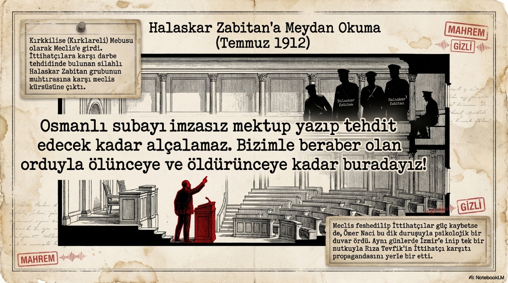
Balkan Harbi yaklaşırken 4 Ekim 1912’de Sultanahmet’te büyük bir miting düzenlendi. On binlerce insanın toplandığı meydanda Ömer Naci konuştu. Onu izleyenler sesini her zaman duymasa bile jestlerinin, kollarının, gövdesinin ve yüzündeki ateşin kalabalığı nasıl dalgalandırdığını anlatır. Bir ara fesini havaya fırlatacak kadar taşmıştı. Bu sahnede Ömer Naci sadece konuşmacı değildir; kalabalığın ritmini yöneten bir orkestra şefi gibidir. Meydan hareketlenir, bağırır, alkışlar, savaşın psikolojisi birkaç dakika içinde yoğunlaşır. Güzel mi, tehlikeli mi? İkisi birden. Zaten Ömer Naci’nin gücü de riski de buradadır.
Aynı dönemde İzmir’e gönderildi. Rıza Tevfik’in İttihatçılar aleyhindeki propagandasını boşa çıkarması isteniyordu. Ömer Naci konuştuğunda gazeteciler sözlerini not edemediklerini itiraf edecek kadar etkilenmişti. Çünkü onun hitabeti yazıya kolay sığmıyordu. Bazı konuşmalar metin olarak değil, hadise olarak yaşanır. Ömer Naci’nin konuşmaları da çoğu zaman böyledir: cümleleri kadar vücut dili, sesi, coşkusu ve kalabalıkla kurduğu elektrik önemlidir.
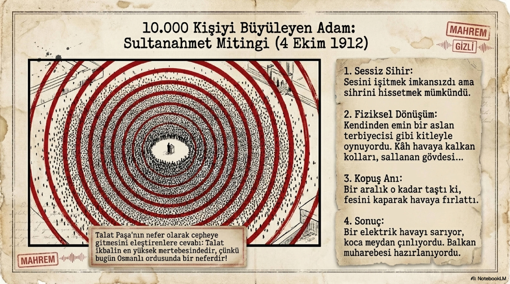
Bölüm 11
Babıali Baskını: Darbenin Ses Telleri
Ömer Naci’nin İttihat ve Terakki tarihindeki en kritik rollerinden biri 23 Ocak 1913 Babıali Baskını sırasında ortaya çıktı. Enver ve fedailer içeride hükümeti düşürecek hamleyi yaparken, dışarıda kalabalığın ikna edilmesi gerekiyordu. İşte bu görev Ömer Naci’ye düştü. Nafıa Nezareti’nin merdivenlerinden halka seslendi, Edirne’nin düşmana bırakılacağı fikri üzerinden öfkeyi büyüttü, askerlerin süngülerini baskıncıların değil hükümetin üzerine çevirmesi gerektiğini haykırdı. O an söz, silahın yanında ikinci operasyon gücüydü.
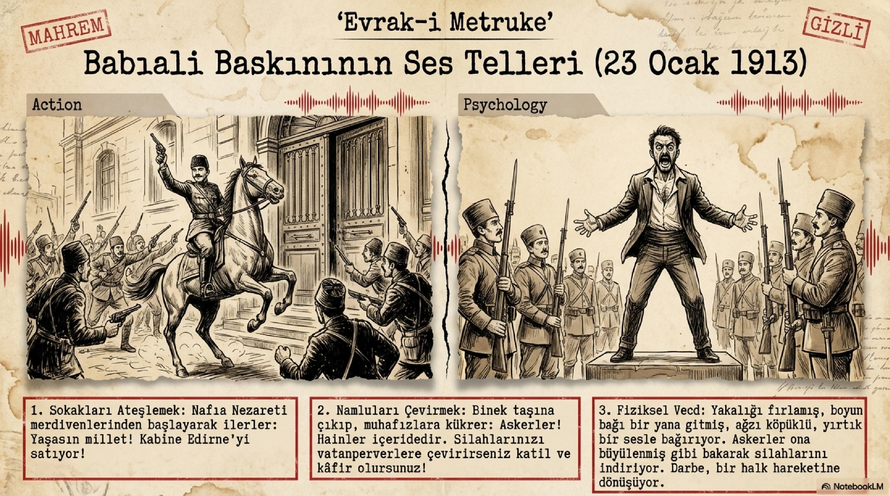
Yahya Kemal’in anlattığı manzara çarpıcıdır: yakalığı fırlamış, boyun bağı yana kaymış, ağzı köpüklü, yırtık bir sesle askerlere bağıran bir Ömer Naci. Ne söylediği her zaman anlaşılmıyor ama askerler gözlerini ondan alamıyor. Bu sahnede siyasetin çıplak hali vardır. İçeride kan akacak, Harbiye Nazırı Nâzım Paşa öldürülecek, Kâmil Paşa’nın istifası alınacaktır. Dışarıda ise Ömer Naci, bu darbe hamlesini halk hareketi gibi gösterecek duygusal atmosferi kurar. Bu, onun gücünün en parlak ve en tartışmalı anıdır.
Bölüm 12
Teşkilat-ı Mahsusa ve Kerkük’te Sessiz Veda
Birinci Dünya Harbi yaklaşırken Ömer Naci yeniden doğu sahasına yöneldi. Teşkilat-ı Mahsusa’nın faaliyet alanında İran, Van ve Kafkas hattı özel önem taşıyordu. Bölgenin dillerini bilmesi, eski ilişkileri, İran meşrutiyetçileriyle teması ve halk üzerinde kurabildiği etki onu doğal bir tercih haline getirdi. Dr. Bahaeddin Şakir’le Erzurum’a gitti; ardından Van ve İran hattında ayrı bir cephe kurması planlandı. Yanında Ruşeni Bey, Emir Haşmet, Çerkes Reşid gibi isimler vardı. Amaç yalnızca askerî harekat değil, yerel unsurları örgütlemek, istihbarat toplamak, düşman sahasında baskı kurmaktı.
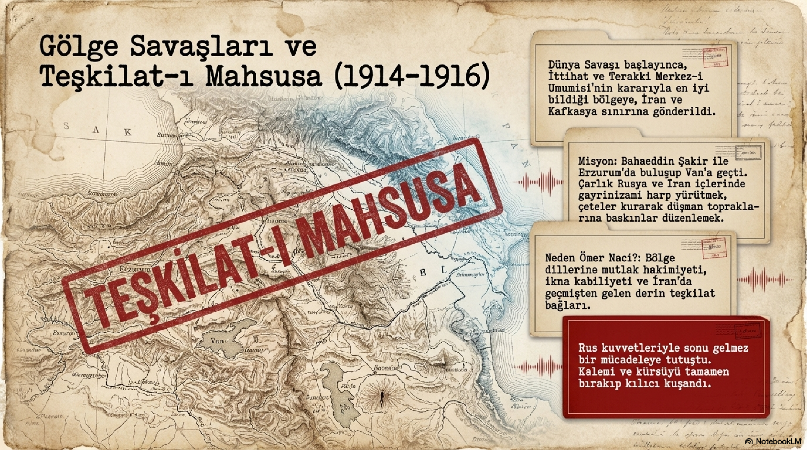
Ömer Naci bu dönemde Rus kuvvetleriyle ve bölgenin sert şartlarıyla boğuştu. İstanbul’dan sürekli sağlık durumu soruluyor, hayatta olup olmadığı öğrenilmeye çalışılıyordu. İlk haberler iyi görünse de cephe hayatı onu tüketti. 1916’da Kerkük’te tifüs hastalığına yakalanarak hayatını kaybetti. Onun ölümü, yalnızca bir hatibin susması değildi. İttihatçılığın en coşkulu seslerinden biri, yine sefer halinde, yine rahat döşeğinde değil, mücadelenin kenarında sustu. Ardından şiirler yazıldı, anıt düşünceleri konuşuldu, dostları onu özlemle andı.
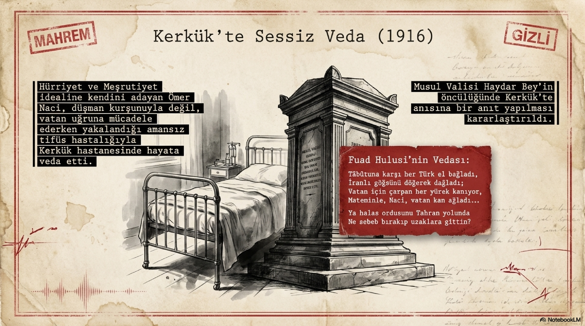
Bölüm 13
Ömer Naci İttihatçılığın Hangi Damarını Temsil Eder?
Sonuç olarak Ömer Naci, İttihat ve Terakki’nin yalnızca karar alan değil, kitle kuran tarafıdır. O, bir örgütün kalabalığa nasıl sesleneceğini, hürriyet fikrinin nasıl duyguya çevrileceğini, propaganda ile idealizm arasındaki çizginin nasıl hem etkili hem de riskli olabileceğini gösterir. Onu yalnızca şair diye anlatırsak eksik kalır; yalnızca hatip diye anlatırsak yine eksik kalır. Ömer Naci, sözün silaha yaklaştığı, kürsünün cepheye döndüğü, davanın insanı tüketene kadar sürüklediği İttihatçı damardır. İttihatçılar ölür, ittihatçılık ölmez cümlesinin kalabalıkta yankılanan sesi varsa, o sesin içinde mutlaka Ömer Naci’nin nefesi vardır.
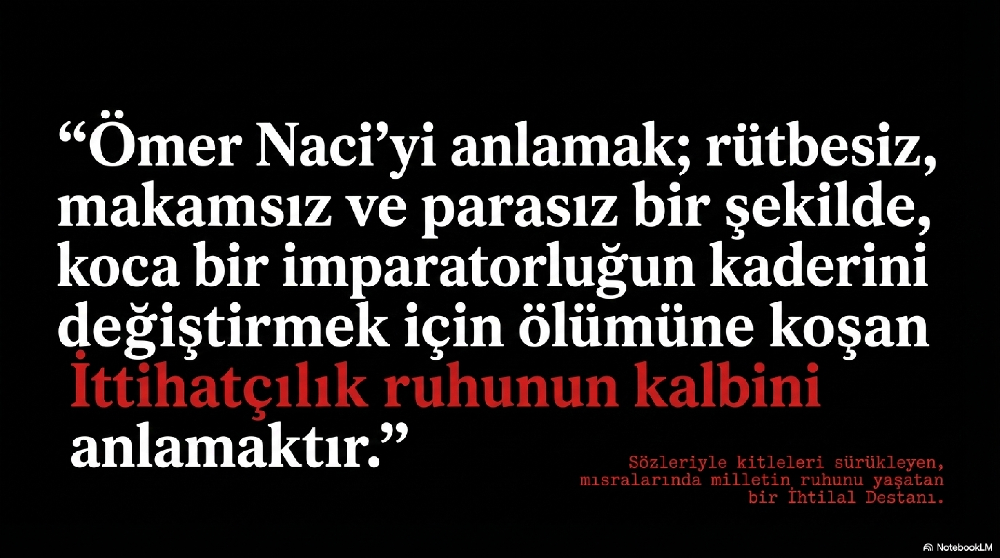